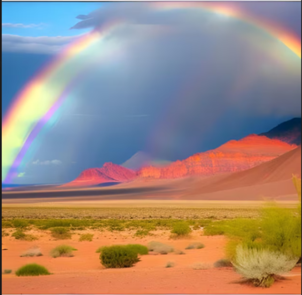
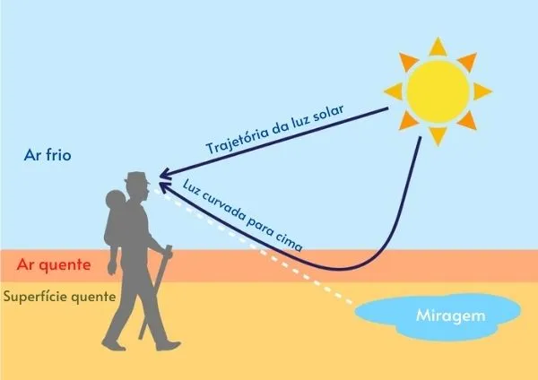
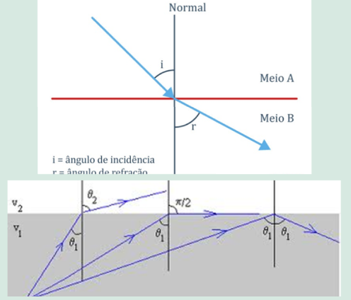
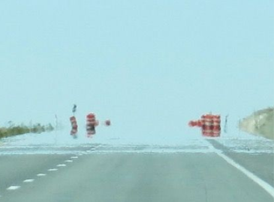
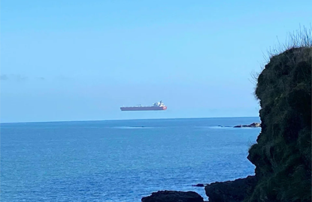

<!DOCTYPE html>
<html lang="pt-br">

</html>

<head>
    <meta charset="UTF-8">
    <meta name="viewport" content="width=device-width, initial-scale=1.0">
    <link rel="stylesheet" href="styles.css">
    <title>Reflexo Do Horizonte Miragens</title>


</head>

<body>
    <header>
        <div class="logo1">
            
            <titulo>
                <h1>Reflexo do Horizonte</h1>
            </titulo>
        </div>


    </header>


    <main>


        <aside>
            <h1>Miragens</h1>
            <h1>Reflexão Total da Luz</h1>
            <h1>Tipos de Miragem</h1>
            <h1>Sua Ligação com o Arco-Íris</h1>
            <h1>Semelhança na Formação</h1>
            <h1>Diferenças Contextuais</h1>
            <h1>Atividades Sobre o Assunto</h1>
        </aside>
        <section>

            <div class="botao">
                <dir class="arco">
                    <a href="index.html">
                        <p class="botaoArco">Arco-Íris</p>
                    </a>
                </dir>

                <dir class="mira">
                    <a href="Miragens.html">
                        <p class="botaoMira">Miragem</p>
                    </a>
                </dir>
                </dir>

            </div>

            <h2 class="sesao">Miragens</h2>
            <p>Uma miragem é um fenômeno óptico que ocorre devido à refração da luz em camadas de ar com temperaturas diferentes, causando a ilusão de que há água ou objetos no horizonte. Esse efeito é mais comum em regiões quentes e planas, como desertos ou estradas asfaltadas sob o sol intenso. Ele acontece quando a luz do céu é curvada ao passar por camadas de ar em diferentes temperaturas, criando uma imagem invertida do céu no chão, semelhante a um reflexo de água. Portanto, ao observar o horizonte, você enxerga uma imagem ilusória criada pela diferença de densidade nas camadas de ar. A camada de ar mais próxima ao solo é quente e menos densa, enquanto as camadas superiores são mais frias e densas, fazendo com que os raios de luz se curvem em direção ao solo. Dessa forma, o que você vê não é realmente uma superfície líquida, mas uma imagem distorcida do céu, formando uma ilusão de ótica que engana os sentidos e se assemelha a uma poça de água ao longe.</p>

            <h2 class="sesao">Como Ocorre</h2>
            <p>Nosso cérebro, acostumado a interpretar a luz como se sempre seguisse trajetórias retas, percebe essa luz refletida como vinda diretamente do solo. Assim, interpretamos a luz refletida como uma imagem invertida e espelhada, criando a ilusão de uma poça de água à frente.</p>
            <p>Em ambientes frios, como nas regiões polares, o processo se inverte. A camada de ar frio está próxima à superfície, enquanto uma camada de ar mais quente está logo acima. Se a luz, ampla, vinda de um barco na água, passa de uma camada fria para uma camada mais quente, ela também sofre refrações até que ocorra a reflexão total. A luz volta para baixo, e o observador vê a imagem do barco projetada no ar, como se estivesse flutuando e invertida. Assim, as aparências da miragem se adaptam às condições de temperatura e densidade do ar, criando ilusões fascinantes tanto nos desertos quanto nos oceanos polares.</p>

        <div class="como">
            
        </div>

            <h2 class="sesao">Curvatura do Caminho da Luz</h2>
            <p>O caminho curvo da luz na miragem pode ser modelado através de um gradiente contínuo de índice de refração, já que a variação de temperatura muda ou índice gradualmente. Esse faz gradiente a luz seguir uma curva em vez de uma linha reta, aproximando-se de uma "curva parabólica". A fórmula aproximada para essa curva depende da variação do índice de refração com a altura (não𝑒) n ( e )) e pode ser complexo, exigindo cálculo diferencial para modelar o caminho exato da luz. Esses relatos explicam o caminho da luz ao passar por camadas de ar com diferentes temperaturas e o ângulo em que a reflexão total ocorre, gerando uma ilusão visual da miragem.</p>

        <div class="cminholuz">
            
        </div>

            <h2 class="sesao">Tipos de Miragem</h2>

            <div class="linha">
                <div class="imagem">
        
                    
                    <p>Miragens Inferiores/ Miragens: 
                        Descrição: Este tipo de miragem é o mais comum e ocorre em climas quentes, especialmente sobre superfícies aquecidas, como asfalto ou areia em desertos.
                        Formação: A luz passa de uma região de ar quente, próximo ao solo, para uma região de ar mais frio acima. Isso provoca a refração da luz, fazendo com que os objetos pareçam ficar refletidos na superfície, como se houvesse uma poça d'água. 
                        A imagem geralmente aparece abaixo da linha do horizonte. 
                        Exemplo: Ao olhar para uma estrada quente em um dia ensolarado, a luz pode criar a ilusão de que há água na pista. </p>
                </div>

                <div class="imagem">
            <p>Miragens Superiores/ Fata Morgana:  
                Descrição: Menos comuns que as miragens inferiores, as miragens superiores ocorrem em regiões frias. 
                Formação: Neste caso, a camada de ar frio está abaixo da camada de ar quente. A luz é refratada de tal forma que objetos distantes parecem flutuar acima da linha do horizonte. 
                Exemplo: Em regiões polares ou sobre águas geladas, pode-se observar navios ou icebergs que parecem estar elevados no ar.  </p>
                </div>
            </div>

            


            <h2 class="sesao">Sua Ligação com o Arco-Íris</h2>
            <p>As aparências da miragem e do arco-íris estão interligadas através de princípios ópticos comuns, especialmente a refração e a reflexão da luz. Os principais pontos que mostram como essas duas especificidades estão ligadas  </p>

            <h3 class="sesao">Semelhanças na Formação  </h3>
                <p><b>Refração da Luz:</b> Ambos os fenômenos dependem da refração. No arco-íris, a luz solar é refratada ao passar por gotículas de água, separando-se em diferentes cores. Nas miragens, a luz se refrata ao atravessar camadas de ar com diferentes temperaturas, criando a ilusão de água ou objetos distantes.  </p>
                <p><b>Reflexão:</b> Tanto o arco-íris quanto as miragens envolvem reflexão. No arco-íris, a luz é refletida internamente nas gotículas de água antes de ser vista pelo observador. Nas miragens, a luz refratada em camadas de ar aquecido pode ser refletida, fazendo o observador ver uma imagem "tremulante".  </p>

            <h3 class="sesao"> Diferenças Contextuais  </h3>
                <p><b>Condições Ambientais:</b> O arco-íris geralmente aparece após chuvas, quando há gotículas de água no ar. Em contraste, as miragens são mais comuns em ambientes quentes, como desertos, onde a diferença de temperatura entre as camadas de ar cria as condições adequadas.  </p>

                <p><b>Percepção Visual:</b> O arco-íris é uma manifestação real, visível como um arco colorido no céu. Já as miragens são ilusões ópticas, levando o observador a acreditar que vê algo que não está realmente presente, como água em um deserto.</p>


            <h2 class="sesao">Diferenças Contextuais</h2>
                <p><b>Refração da Luz:</b> Ambos os fenômenos dependem da refração. No arco-íris, a luz solar é refratada ao passar por gotículas de água, separando-se em diferentes cores. Nas miragens, a luz se refrata ao atravessar camadas de ar com diferentes temperaturas, criando a ilusão de água ou objetos distantes.  </p>

                <p><b>Reflexão:</b> Tanto o arco-íris quanto as miragens envolvem reflexão. No arco-íris, a luz é refletida internamente nas gotículas de água antes de ser vista pelo observador. Nas miragens, a luz refratada em camadas de ar aquecido pode ser refletida, fazendo o observador ver uma imagem "tremulante".  </p>


            <h2 class="sesao">Questões sobre o assunto</h2>

            <p><h3>1) Qual é a diferença principal entre uma miragem inferior e uma miragem superior?</h3></p>
            <ol type="A">
                <li>) A miragem inferior ocorre em climas frios, enquanto a miragem superior ocorre em climas quentes.</li>
                <li>) A miragem inferior faz com que objetos pareçam flutuar, enquanto a miragem superior reflete luz diretamente no solo. </li>
                <li>) A miragem inferior aparece abaixo do horizonte, enquanto a miragem superior faz com que objetos pareçam elevados acima do horizonte. </li>
                <li>) A miragem inferior reflete luz através de gotículas de água, enquanto a miragem superior ocorre devido à ausência de umidade </li>
            </ol>
            <label for="toggle-1"></label>
                ←Clique aqui para ver a resposta
            </label>
            <input type="checkbox" id="toggle-1">
            <div id="mostra">
                <b>Resposta correta:</b>: C) A miragem inferior aparece abaixo do horizonte, enquanto a miragem superior faz com que objetos pareç m elevados acima do horizonte.</li>
            </div>
            <hr>

            <p><h3>2) O que causa a formação de uma miragem?</h3></p>
            <ol type="A">
                <li>) Desidratação extrema em ambientes quentes.</li>
                <li>) Difração da luz em áreas com altas temperaturas. </li>
                <li>) Refração e reflexão da luz ao passar por camadas de ar com diferentes temperaturas. </li>
                <li>) A luz refletida diretamente da superfície da Terra </li>
                <li>) Mudança na cor da luz solar ao atingir a superfície.</li>
            </ol>
            <label for="toggle-1"></label>
                ← Clique aqui para ver a resposta
            </label>
            <input type="checkbox" id="toggle-1">
            <div id="mostra">
                <b>Resposta correta:</b> C) Refração e reflexão da luz ao passar por camadas de ar com diferentes temperaturas.
            </div>
            <hr>

            <p><h3>3)A miragem é frequentemente associada à ilusão de água em ambientes quentes, como desertos. Qual é o principal fenômeno físico que explica essa ilusão, considerando a interação entre a luz e as camadas de ar com diferentes temperaturas? </h3></p>
            <ol type="A">
                <li>) Difração da luz em superfícies irregulares.</li>
                <li>) Refração da luz ao atravessar camadas de ar com gradientes de temperatura, resultando em mudanças na direção dos raios de luz. </li>
                <li>) Reflexão da luz em superfícies líquidas. </li>
                <li>) Absorção da luz em ambientes secos. </li>
                <li>) Dispersão da luz em ambientes saturados de vapor.</li>
            </ol>
            <label for="toggle-1"></label>
                ← Clique aqui para ver a resposta
            </label>
            <input type="checkbox" id="toggle-1">
            <div id="mostra">
                <b>Resposta correta:</b> B) Refração da luz ao atravessar camadas de ar com gradientes de temperatura, resultando em mudanças na direção dos raios de luz
            </div>
            <hr>

            <p><h3>4)O fenômeno da miragem, frequentemente retratado em filmes e desenhos animados, é muitas vezes associado à ilusão de água em desertos. No entanto, esse fenômeno óptico pode ocorrer em diversos ambientes com temperaturas extremas e é causado pela refração e reflexão da luz. Sobre a formação da miragem, é correto afirmar que:</h3></p>
            <ol type="A">
                <li>)  A miragem é um fenômeno ilusório provocado pela desidratação em ambientes quentes, como desertos.</li>
                <li>) O fenômeno ocorre exclusivamente em ambientes quentes, sendo impossível observar miragens em climas frios. </li>
                <li>) A miragem se forma quando a luz solar atravessa camadas de ar com diferentes temperaturas, sendo refratada e, eventualmente, refletida. </li>
                <li>) A luz, ao passar por camadas de ar com temperaturas estáveis, é distorcida, criando a ilusão de água no horizonte. </li>
            </ol>

            <label for="toggle-1"></label>
                ←Clique aqui para ver a resposta
            </label>
            <input type="checkbox" id="toggle-1">
            <div id="mostra">
                <b>Resposta correta:</b> C) A miragem se forma quando a luz solar atravessa camadas de ar com diferentes temperaturas, sendo refratada e, eventualmente, refletida de volta ao observador.
            </div>

            <hr>
            <br>
            
                <div class="tabelacontato">

                    <h4>Em caso de dúvidas entre em contato conosco!</h4>

                    <table>
                        <tr>
                            <th>Nome do desenvolvedor</th>
                            <th>Email</th>
                            <th>Instagram</th>
                        </tr>
                        <tr>
                            <td>Maria Clara De A. Patta</td>
                            <td>maria.patta@aluno.senai.br</td>
                            <td>@clara_patta</td>
                        </tr>
                        <tr>
                            <td>Lívia Luque Monarin</td>
                            <td>lívia.monarin@aluno.senai.br</td>
                            <td>@luk_luart</td>
                        </tr>
                        <tr>
                            <td>Wuallan Meira Gomes D'Avilla</td>
                            <td>wuallan.davilla@aluno.senai.br</td>
                            <td>@Wuallan_D'Avilla</td>
                        </tr>
                        <tr>
                            <td>Flávio José De Souza Nascimento</td>
                            <td>flavio.j.nascimento6@aluno.senai.br</td>
                            <td>@Saikkwy</td>
                        </tr>
                    </table>
                </div>
    
            
            <br>
            <hr>


           

        </section>
    </main>

    <footer>
        
        <h5>Todos os direitos reservados aos desenvolvedores: Wuallan D'Avilla - Flávio Jose - Lívia Luque - Maria Clara
            Patta</h5>

    </footer>

</body>


</html>